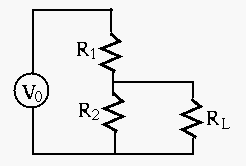
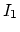

Solution:

Solution:
move two voltage sources to left, and 3- resistor to the right as load
find equivalent voltage Vo and internal resistance and Ro:
resistor to the right as load
find equivalent voltage Vo and internal resistance and Ro:
current going clockwise around the loop (without load): voltages across 6 ohm resistor and 12 ohm resistor are -2V and 4V, , , current through load resistor is .

Solution:
Use superposition principle. When 24V is acting alone with 1A open, parallel resistors 15 and 10 become , , . When 1A is acting alone with 24V closed, parallel resistors 6 and 15 become , , , overall , .
Hint: It is very hard to solve the problem by finding the currents in
the order of , ,  , as computing the resistances of the resistor
network is tedious. However, it is much more straight forward to find the
currents in the order of
, as computing the resistances of the resistor
network is tedious. However, it is much more straight forward to find the
currents in the order of  , , , if you assume
, , , if you assume  is known,
e.g., . However, the voltage for the voltage source obtained based
on this assumption is of course not as given (120V). In this case, the
linearity property
can be applied. In particular,
given , then
. Use this relationship to find the
actual values of the currents.
is known,
e.g., . However, the voltage for the voltage source obtained based
on this assumption is of course not as given (120V). In this case, the
linearity property
can be applied. In particular,
given , then
. Use this relationship to find the
actual values of the currents.
Solution:

Solution: Consider each of the three sources alone:
current thru R6:
current thru R4:
current thru R1 is (half of that thru R6): 5/3